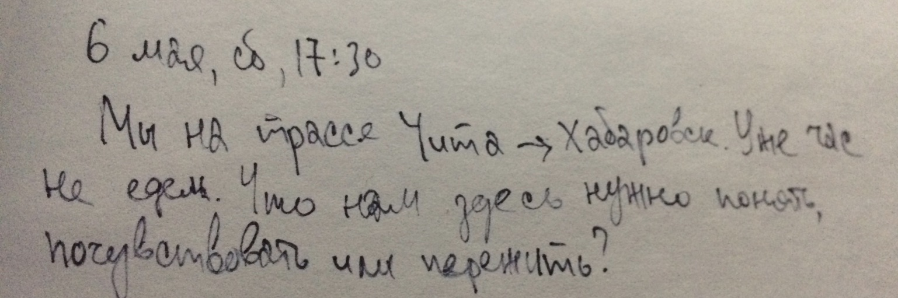

Когда проснемся, выдвигаемся из Читы во Владивосток. Я еду, с одной стороны, накапливать. С другой стороны, я понимаю, что пора уже и отдавать. Какая-то неуверенность, как всегда, конечно. Что отдавать? Кому это нужно? И тд. Но чтобы накопить больше, нужно выплеснуть то, что есть. Выплеснуть актерство, игру, пение, может быть даже танец. Выплеснуть йогу. Выплеснуть программирование. Выплеснуть рисование. Выплеснуть писание. Посмотреть как получится и двигаться дальше, улучшать, изучать.
 Хабаровск. Уже час не едем. Что нам здесь нужно понять, почувствовать или пережить?"> Через 2,5 часа пинания камешков, попыток погладить пса "мальчишку", пения всяческих песен, зова коров, я решил озвучить какое-то свое ощущение по-поводу единственного объекта, который оставался в нашей видимости, но с которым мы до этого не взаимодействовали — кафе "Карина". Там чуть дальше еще было кафе "Надежда", но от него мы вдохновлялись только названием, а кушать пошли всё же в Карину.Стоя за прилавком, листаем меню. Я выбрал борщ с говядиной, потому что давненько не ел борщ. Артём выбрал вареники с картошкой. А я ему говорю, бери лучше с творогом. Когда мы были в Чите и ходили к его бабушке в гости, она нас угощала самодельными варениками с картошкой. Она говорила, что это Тёмкино любимое блюдо детства. Попробовав вареники, я одобрил его выбор. Это достаточно большие маслянистые прелести. Это что касается вареников Артёминой бабушки. А вприцнипе, в обычной жизни, мои любимые вареники — с творогом. И я об этом несколько раз обмалвивался ещё в Чите. И вот и теперь говорю, бери лучше с творогом. Это ты бери с творогом. И тут я всё понимаю. И беру с творогом.
Потому что я всё, вдруг, понял: "С творогом вместо борща, вот что ты мне хочешь мне скзаать!". В один миг у меня всплывает в голове несколько вещей и вот каких: Артём не ест мясо и хочет, чтобы все окружающие тоже не ели. И это его "это ты бери с творогом" было не типа "сам дурак", а типа "вместо говядины возьми вареники". Он всегда так говорит и я должен был как обычно пропустить это мимо ушей, если бы не два понимания, которые ко мне пришли в этот миг.
Вот первое: я вспоминаю, как бродя по Чите я думал про себя, господи, научи не есть мясо. Я всё понимаю, я чувствую как мне совестно и зачастую неприятно кушать, но почему-то я легко поступаю наперекор совести. Научи как не есть мясо. Так я думал про себя, бродя по Чите.
И второе: я понимаю, что мы уже 3 часа взаперти, когда я не могу повлиять на ситуацию, не могу взять и уйти или отвлечься. Мы где-то между городами стоим на остановке. Я не могу пойти в интернет или посмотреть мультики или пойти гулять. Все что у меня есть здесь и сейчас — это текущие здесь и сейчас. И мне нужно принять какое-то решение сейчас и здесь. И эта ситуация надпомнила мне, что босс космической мафии запер меня в этом вонючем туалете и не выпустит, пока я всё не отдам. Но тут скорее я заперт для того, чтобы услышать его ответ на свой вопрос. В обычной жизни легко пропустить, не заметить его ответ. В обычной обстановке, попадая в некомфортную ситуацию, есть масса способов выйти из неё ничего не решив, как-то отвлечься, отложить разговор. Здесь же, в пути, когда ты доверяешь себя вселенной, она выходит с тобой на диалог и с любовью держит тебя за яйца.
Я беру с вареники с творогом. Они не такие, как я ожидал. Я привык, что они сладковатые, а эти были кисловатые, а совсем не сладковатые. Я не понял почему так, но мне хватило того осознания. Мы поели, вышли и сразу же поймали тачку.
Смотря на эту ситуацию, помимо того, что я описал, я увидел еще кое-что. От нас зависят окружающие. Своим промедлением, я не давал двигаться Артёму. Кажется, это тоже важно.
Ну вот, теперь всё.